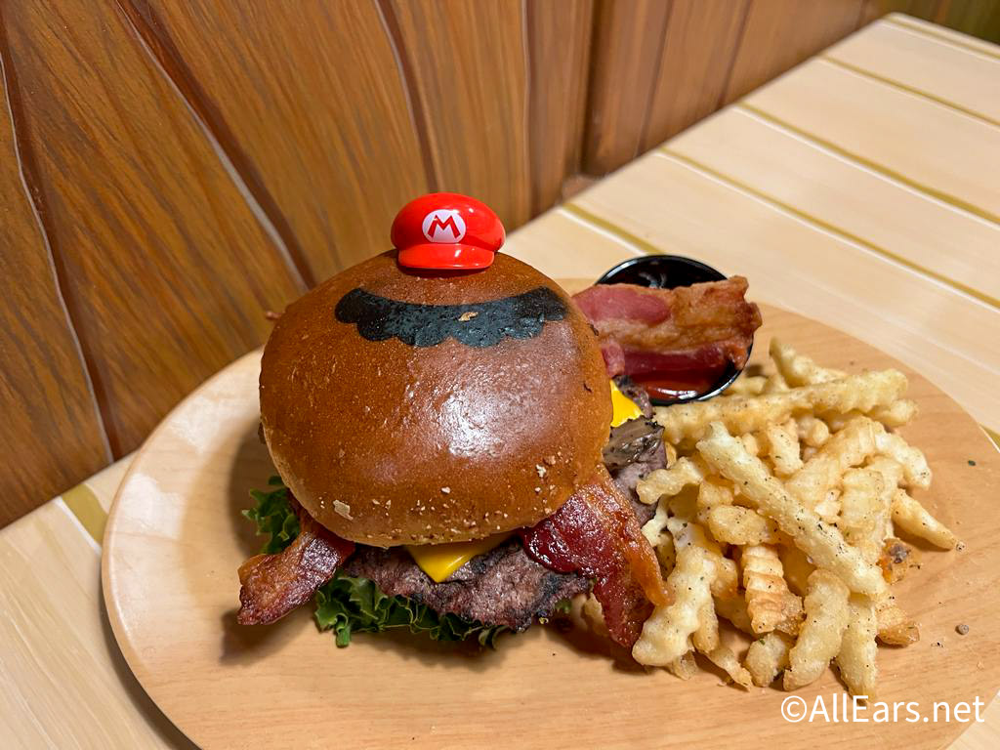
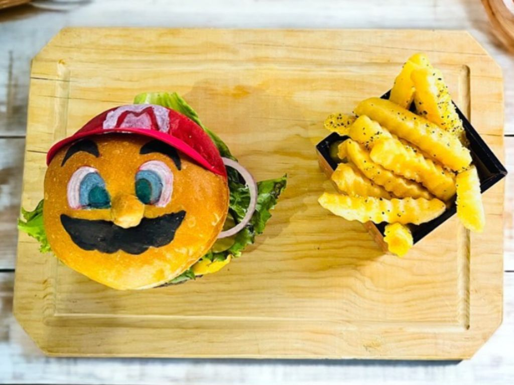
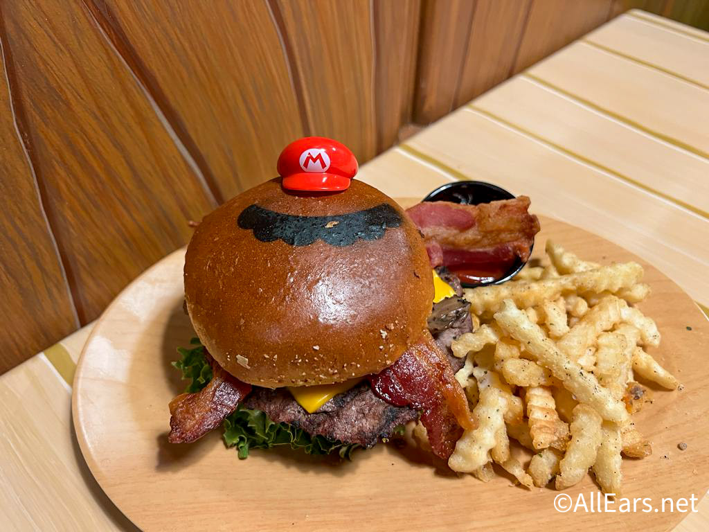
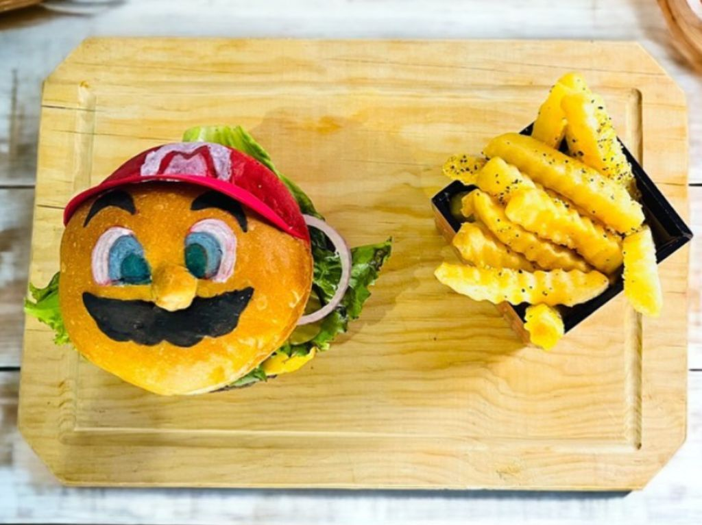

A must-try for fans of the iconic plumber. This limited-edition treat captures the essence of Mario, featuring vibrant, edible designs of his classic red cap and mustache. The cake itself combines a delicius blend of flavors, evoking the fun and adventure of Mario’s world
This delectable cake features a vibrant design with Mario’s signature hat, mustache, and iconic red and blue colors. Inside, the cake is filled with rich, mouth-watering layers that promise a delightful experience with every bite